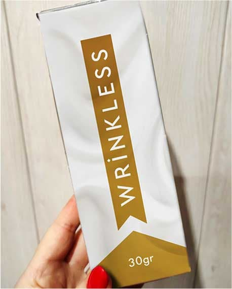

Как разгладить морщины, убрать пигментацию и не разориться на косметике? Beauty Insider делится лайфхаком
Хотите избавиться от морщин и без Instagram-фильтров выглядеть сногсшибательно? Тогда читайте далее.

В борьбе за красоту и молодость все средства хороши. Мы устроили тест-драйв самого обсуждаемого бьюти-бестселлера 2020 - лифтинг-сыворотки Wrinkless. И вот что из этого вышло:

Трудно поверить, но промежуток между этими фото - всего месяц! Невероятно, не правда ли?
Знакомьтесь, это Мери-Элин, 52-летняя мама главного редактора Beauty Insider. Мы пригласили ее в качестве модели нашего исследования. Цель: выяснить, настолько ли сыворотка от морщин Wrinkless хороша, как пишут о ней бьюти-блогеры и модные журналы.
Мы попросили Мери-Элин на 1 месяц заменить привычный уход за лицом на Wrinkless и подробно описать свои ощущения в дневнике.
Результаты поразили даже опытных журналистов и бьюти-экспертов!
О себе
“Мне 52 года. Я оцениваю свою внешность адекватно.
Выгляжу обычно — согласно возрасту. Мне давно не 20 и кожа давно покрылась морщинами. Где то мелкими, где то глубокими. Кое где — пигментация. Да и контур лица уже не такой подтянутый, как раньше. Сила гравитации берет свое — овал поплыл, появились брыли и складочки.
В косметику с пометкой “лифтинг”давно не верю — это всего лишь рекламная уловка. Мне еще ни разу не попадалось средство с эффектом “ВАУ”. Поэтому никаких чудес от этого эксперимента я не ждала. А зря!
Но эта сыворотка сотворила волшебство! Все фото мои, без фотошопа. Я до сих пор поверить не могу, что это я - женщина, которая ни разу и косметолога-то не была... Нет, это что-то невероятное! 😍
Первое применение. Вечер 27.11.2020.
Что заметила сразу — консистенция этой сыворотки сильно отличалась от тех средств, что были у меня дома. У Wrinkless текстура легкая, мягкая, нежная. В отличии от моих кремов впитывается быстро и почти не ощутима на коже. Не оставляет жирного блеска и ощущения липкой пленки на лице.

Наутро лицо выглядело лучше обычного: никакой отечности и синяков под глазами несмотря на то, что я проспала всего 5 часов.
1 неделя
Заметила, что изменился цвет лица. Землистый оттенок, который появился вместе с привычкой курить по пачке сигарет в день сменился здоровой и нежной розовинкой, как у девушки-подростка.
Выгляжу свежо. Вроде бы совсем незначительные изменения... А настроение выше крыши! Это заметили и коллеги мужского пола: то дверь придержат, то бумагу в принтер помогут загрузить. Делаю вывод, что мужчин притягивают счастливые женщины.
Дальше - больше!
Верю. �
2 неделя
Я использую сыворотку Wrinkless два раза в день: утром и вечером. По моим подсчетам, эффект держится где-то 12 часов. Никакой сухости и стянутости в течении всего дня. Жирного блеска тоже нет.
Кожа засияла. Особенно видно при дневном освещении. Будто отражает солнечный свет.
Очередным приятным сюрпризом стал экономичный расход сыворотки. Для лица и шеи хватает две-три капли. Одного флакона точно надолго хватит.
Определенно, я куплю эту сыворотку снова.
3 неделя
С утра рассматривала свое отражение в зеркале и не могла нарадоваться.
Улыбнувшись себе, заметила, что “гусиные лапки” под глазами куда-то пропали.
Кожа будто благодарит за Wrinkless — она мягкая на ощупь, но в то же время упругая, к ней приятно прикасаться.
К концу недели появилась еще одна радость. Пигментные пятна на лбу и щеках посветлели! Впереди еще одна неделя. Предполагаю эффект проявится еще сильнее.
4 неделя
Если встретите мои морщины — передайте им, чтобы не возвращались!
Еще недавно мои носогубные складки были глубокими, как Гранд - Каньон. За месяц они стали едва заметны.
Кожа лица и шеи стала упругой, исчезла дряблость и второй подбородок. Овал приобрел выраженный контур: скулы, линия подбородка. Эффект супер!
Сыворотка Wrinkless не подвела!
Пигментные пятнышки на лбу и щеках посветлели и полностью сравнялись с тоном кожи. Мой новый цвет лица восхитителен! Здоровый! Сияющий!
А уж сколько комплиментов я услышала от мужчин! И от любимого зятя, и от кондитера, у которого я покупаю сладости уже лет 6. И даже угрюмый продавец овощей, от которого редко услышишь доброе слово, сказал мне вчера: “Хорошо выглядите. Приходите почаще”
Гляжу на свои фото в начале месяца и сейчас... Да, я будто на 10 лет помолодела! Смотрю на свое отражение и радуюсь, хоть пока до конца не верится, что это все правда, но сердце счастьем наливается, хочется летать! ☺
История Мери-Элин вдохновляет. Мы с особым трепетом наблюдали за этим перевоплощением и бесконечно радуемся за нее.
В свою очередь хотим сказать Мери-Элин СПАСИБО ЗА ДОВЕРИЕ!
Вместе с редакцией Beauty Insider за нашей героиней наблюдал бьюти-эксперт Эрик Лунден. Его мнение на счет сыворотки Wrinkless однозначно:
“Своим клиенткам я рекомендую сыворотку Wrinkless.
Это абсолютный мастхэв каждой женщины после 25 лет.
Активные компоненты средства, а именно витамин Е и комплекс натуральных масел (ореха, абрикосовых косточек, макадамии, семян сливы, малины и жожоба) активно увлажняют, питают и разглаживают морщины. Создавая невидимый моделирующий каркас - “эффект второй кожи”, сыворотка Wrinkless мгновенно подтягивает контуры лица. Овал становится четким и ярко выраженным.
В отличии от других средств, Wrinkless работает сама по себе. Под нее не нужен усиливающий бустер или закрепляющий крем.
Если у вас есть пигментные пятна, Wrinkless справится и с ними - благодаря антиоксидантам в составе. Они расщепляют скопления окрашивающего кожу меланина и выравнивают ее тон. Это делает лицо более светлым и сияющим.
Все это в комплексе визуально молодит женщину на 5-7 лет. И это не просто громкие слова. Просто еще раз взгляните на перевоплощение Мери-Элин. Какая же она красотка!
Я считаю, что сыворотка Wrinkless является лучшей альтернативой всем существующим лифтинг процедурам.На данный момент средство имеет 4 авторских патента и не имеет аналогов по эффективности. С таким сильным помощником вам не понадобятся ни инъекции, ни подтяжки, ни операции!
ИТОГИ: СЫВОРОТКА Wrinkless РАБОТАЕТ. Проверено.
Внимание: Специально для наших читательниц производитель Wrinkless предоставляет скидку 50% всем покупательницам Wrinkless. Переходите по ссылке на официальный сайт и заказывайте антивозрастную сыворотку по специальной цене >>>
Комментарии (17)
Как мило! Редко встретишь в таком возрасте женщину с таким позитивным взглядом на жизнь и на свою внешность.
Согласна. Прям ВАУ! Лицо будто после каких-то крутых процедур. �